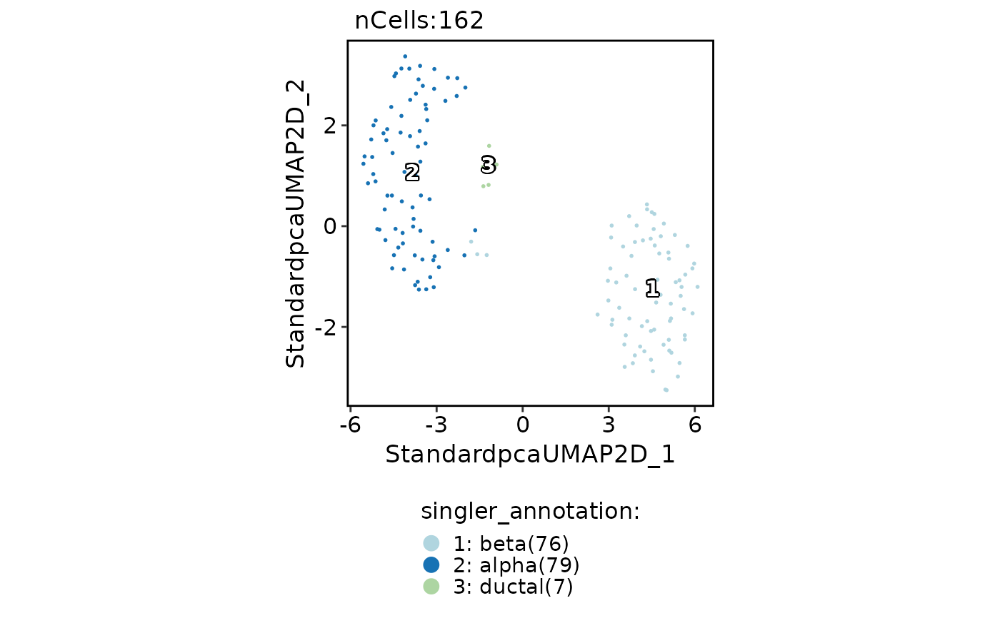
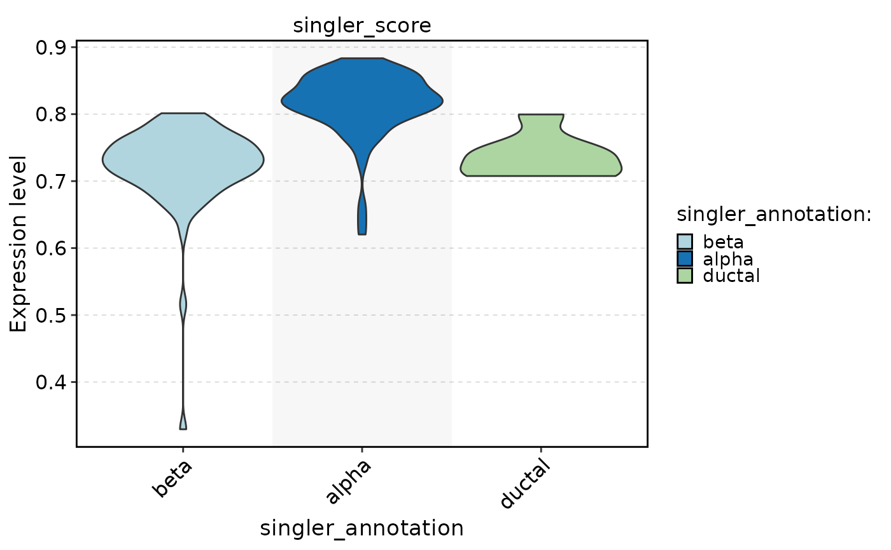
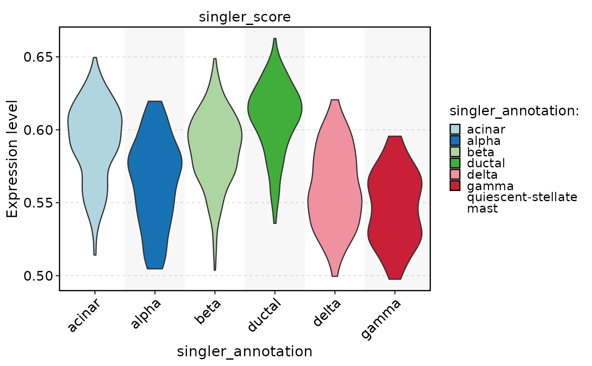
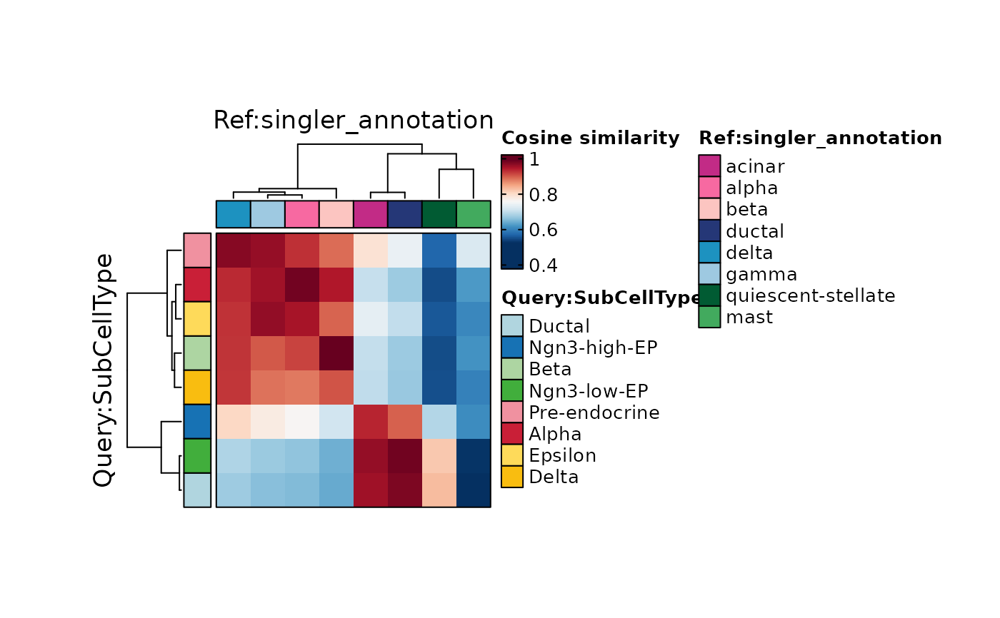

Annotate single cells using SingleR
Usage
RunSingleR(
srt_query,
srt_ref,
query_group = NULL,
ref_group = NULL,
query_assay = "RNA",
ref_assay = "RNA",
genes = "de",
de.method = "wilcox",
sd.thresh = 1,
de.n = NULL,
aggr.ref = FALSE,
aggr.args = list(),
quantile = 0.8,
fine.tune = TRUE,
tune.thresh = 0.05,
prune = TRUE,
cores = 1,
verbose = TRUE
)Arguments
- srt_query
An object of class Seurat to be annotated with cell types.
- srt_ref
An object of class Seurat storing the reference cells.
- query_group
A character vector specifying the column name in the
srt_querymetadata that represents the cell grouping.- ref_group
A character vector specifying the column name in the
srt_refmetadata that represents the cell grouping.- query_assay
A character vector specifying the assay to be used for the query data. Default is the default assay of the
srt_queryobject.- ref_assay
A character vector specifying the assay to be used for the reference data. Default is the default assay of the
srt_refobject.- genes
A string containing
"de", indicating that markers should be calculated fromref. For back compatibility, other string values are allowed but will be ignored with a deprecation warning.Alternatively, if
refis not a list,genescan be either:A list of lists of character vectors containing DE genes between pairs of labels.
A list of character vectors containing marker genes for each label.
If
refis a list,genescan be a list of length equal toref. Each element of the list should be one of the two above choices described for non-listref, containing markers for labels in the corresponding entry ofref.- de.method
String specifying how DE genes should be detected between pairs of labels. Defaults to
"classic", which sorts genes by the log-fold changes and takes the topde.n. Other options are"wilcox"and"t", see Details. Ignored ifgenesis a list of markers/DE genes.- sd.thresh
Deprecated and ignored.
- de.n
An integer scalar specifying the number of DE genes to use when
genes="de". Ifde.method="classic", defaults to500 * (2/3) ^ log2(N)whereNis the number of unique labels. Otherwise, defaults to 10. Ignored ifgenesis a list of markers/DE genes.- aggr.ref, aggr.args
Arguments controlling the aggregation of the references prior to annotation, see
trainSingleR.- quantile
"quantile" parameter in SingleR::SingleR function.
- fine.tune
"fine.tune"parameter in SingleR::SingleR function.- tune.thresh
"tune.thresh"parameter in SingleR::SingleR function.- prune
"prune"parameter in SingleR::SingleR function.- cores
The number of cores to use for parallelization with foreach::foreach. Default is
1.- verbose
Whether to print the message. Default is
TRUE.
Value
An annotate Seurat object.
The annotation results are stored in the singler_annotation column of the meta data,
and the corresponding scores are stored in the singler_score column.
Examples
data(panc8_sub)
genenames <- make.unique(
thisutils::capitalize(
rownames(panc8_sub),
force_tolower = TRUE
)
)
names(genenames) <- rownames(panc8_sub)
panc8_sub <- RenameFeatures(
panc8_sub,
newnames = genenames
)
#> ℹ [2026-05-25 11:16:52] Rename features for the assay: RNA
panc8_sub <- standard_scop(panc8_sub)
#> ℹ [2026-05-25 11:16:52] Start standard processing workflow...
#> ℹ [2026-05-25 11:16:52] Checking a list of <Seurat>...
#> ! [2026-05-25 11:16:52] Data 1/1 of the `srt_list` is "unknown"
#> ℹ [2026-05-25 11:16:52] Perform `NormalizeData()` with `normalization.method = 'LogNormalize'` on 1/1 of `srt_list`...
#> ℹ [2026-05-25 11:16:54] Perform `Seurat::FindVariableFeatures()` on 1/1 of `srt_list`...
#> ℹ [2026-05-25 11:16:55] Use the separate HVF from `srt_list`
#> ℹ [2026-05-25 11:16:55] Number of available HVF: 2000
#> ℹ [2026-05-25 11:16:55] Finished check
#> ℹ [2026-05-25 11:16:55] Perform `Seurat::ScaleData()`
#> ℹ [2026-05-25 11:16:55] Perform pca linear dimension reduction
#> ℹ [2026-05-25 11:16:56] Use stored estimated dimensions 1:27 for Standardpca
#> ℹ [2026-05-25 11:16:56] Perform `Seurat::FindClusters()` with `cluster_algorithm = 'louvain'` and `cluster_resolution = 0.6`
#> ℹ [2026-05-25 11:16:57] Reorder clusters...
#> ℹ [2026-05-25 11:16:57] Skip `log1p()` because `layer = data` is not "counts"
#> ℹ [2026-05-25 11:16:57] Perform umap nonlinear dimension reduction
#> ℹ [2026-05-25 11:16:57] Perform umap nonlinear dimension reduction using Standardpca (1:27)
#> ℹ [2026-05-25 11:17:03] Perform umap nonlinear dimension reduction using Standardpca (1:27)
#> ✔ [2026-05-25 11:17:08] Standard processing workflow completed
data(pancreas_sub)
pancreas_sub <- standard_scop(pancreas_sub)
#> ℹ [2026-05-25 11:17:08] Start standard processing workflow...
#> ℹ [2026-05-25 11:17:09] Checking a list of <Seurat>...
#> ! [2026-05-25 11:17:09] Data 1/1 of the `srt_list` is "unknown"
#> ℹ [2026-05-25 11:17:09] Perform `NormalizeData()` with `normalization.method = 'LogNormalize'` on 1/1 of `srt_list`...
#> ℹ [2026-05-25 11:17:11] Perform `Seurat::FindVariableFeatures()` on 1/1 of `srt_list`...
#> ℹ [2026-05-25 11:17:11] Use the separate HVF from `srt_list`
#> ℹ [2026-05-25 11:17:12] Number of available HVF: 2000
#> ℹ [2026-05-25 11:17:12] Finished check
#> ℹ [2026-05-25 11:17:12] Perform `Seurat::ScaleData()`
#> ℹ [2026-05-25 11:17:12] Perform pca linear dimension reduction
#> ℹ [2026-05-25 11:17:12] Use stored estimated dimensions 1:23 for Standardpca
#> ℹ [2026-05-25 11:17:13] Perform `Seurat::FindClusters()` with `cluster_algorithm = 'louvain'` and `cluster_resolution = 0.6`
#> ℹ [2026-05-25 11:17:13] Reorder clusters...
#> ℹ [2026-05-25 11:17:13] Skip `log1p()` because `layer = data` is not "counts"
#> ℹ [2026-05-25 11:17:13] Perform umap nonlinear dimension reduction
#> ℹ [2026-05-25 11:17:13] Perform umap nonlinear dimension reduction using Standardpca (1:23)
#> ℹ [2026-05-25 11:17:18] Perform umap nonlinear dimension reduction using Standardpca (1:23)
#> ✔ [2026-05-25 11:17:24] Standard processing workflow completed
pancreas_sub <- RunSingleR(
srt_query = pancreas_sub,
srt_ref = panc8_sub,
query_group = "Standardpca_SNN_res.0.6",
ref_group = "celltype"
)
#> ℹ [2026-05-25 11:17:24] Start SingleR annotation
#> ℹ [2026-05-25 11:25:35] Data type is log-normalized
#> ℹ [2026-05-25 11:25:35] Detected `srt_query` data type: "log_normalized_counts"
#> ℹ [2026-05-25 11:25:36] Data type is log-normalized
#> ℹ [2026-05-25 11:25:36] Detected `srt_ref` data type: "log_normalized_counts"
#> ℹ [2026-05-25 11:25:36] Perform "SingleRCluster"
#> Detected a large SingleCellExperiment as the reference dataset, consider
#> setting 'aggr.ref = TRUE' for speed in trainSingleR(). If you know better, this
#> hint can be disabled with 'hint.sce=FALSE'.
#> ✔ [2026-05-25 11:25:37] SingleR annotation completed
CellDimPlot(
pancreas_sub,
group.by = c("singler_annotation", "SubCellType")
)

pancreas_sub <- RunSingleR(
srt_query = pancreas_sub,
srt_ref = panc8_sub,
query_group = NULL,
ref_group = "celltype"
)
#> ℹ [2026-05-25 11:25:38] Start SingleR annotation
#> ℹ [2026-05-25 11:25:38] Data type is log-normalized
#> ℹ [2026-05-25 11:25:38] Detected `srt_query` data type: "log_normalized_counts"
#> ℹ [2026-05-25 11:25:39] Data type is log-normalized
#> ℹ [2026-05-25 11:25:39] Detected `srt_ref` data type: "log_normalized_counts"
#> ℹ [2026-05-25 11:25:40] Perform "SingleRCell"
#> Detected a large SingleCellExperiment as the reference dataset, consider
#> setting 'aggr.ref = TRUE' for speed in trainSingleR(). If you know better, this
#> hint can be disabled with 'hint.sce=FALSE'.
#> ✔ [2026-05-25 11:25:43] SingleR annotation completed
CellDimPlot(
pancreas_sub,
group.by = c("singler_annotation", "SubCellType"),
label = TRUE
)

CellCorHeatmap(
pancreas_sub,
group.by = "singler_annotation",
assay = "RNA",
layer = "data",
method = "spearman"
)
#> Error in CellCorHeatmap(pancreas_sub, group.by = "singler_annotation", assay = "RNA", layer = "data", method = "spearman"): unused arguments (group.by = "singler_annotation", assay = "RNA", layer = "data", method = "spearman")
ht1 <- CellCorHeatmap(
srt_query = pancreas_sub,
srt_ref = pancreas_sub,
query_group = "SubCellType",
cluster_rows = TRUE,
ref_group = "singler_annotation",
cluster_columns = TRUE,
width = 2,
height = 2
)
#> ℹ [2026-05-25 11:25:44] Drop [1] 19 cells with NA in the ref_group
#> ℹ [2026-05-25 11:25:44] Use the HVF to calculate distance metric
#> ℹ [2026-05-25 11:25:44] Use [1] 2000 features to calculate distance.
#> ℹ [2026-05-25 11:25:44] Detected query data type: "log_normalized_counts"
#> ℹ [2026-05-25 11:25:44] Detected reference data type: "log_normalized_counts"
#> ℹ [2026-05-25 11:25:44] Calculate similarity...
#> ℹ [2026-05-25 11:25:44] Use raw method to find neighbors
#> ℹ [2026-05-25 11:25:44] Predict cell type...

ht1$plot
